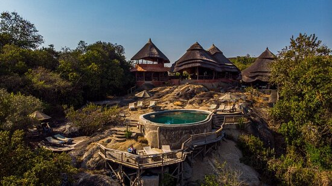
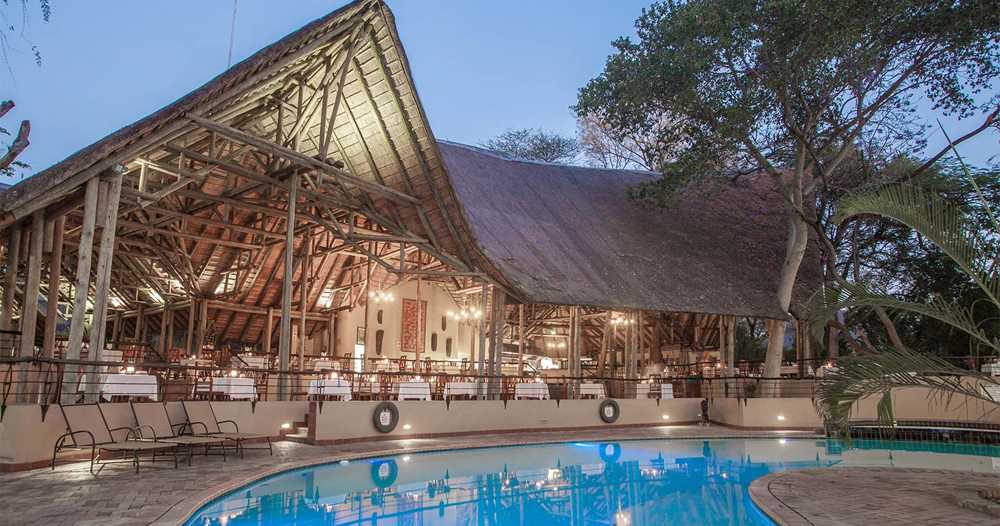
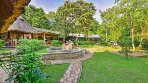
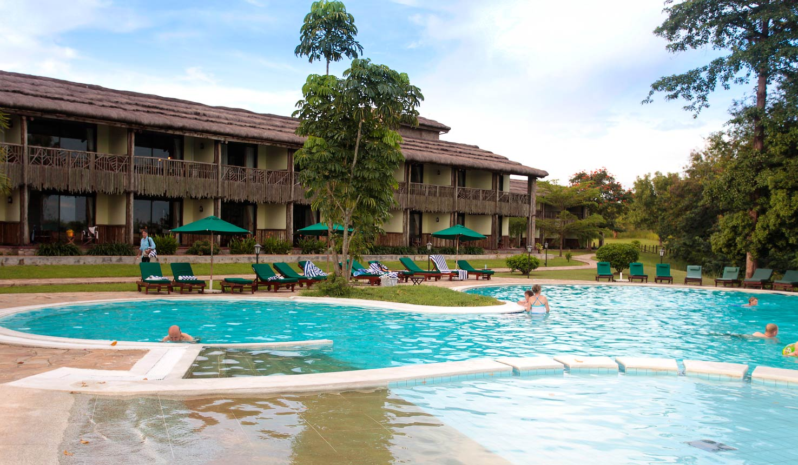

Top Accommodations in Uganda
Mihingo Lodge
Mihingo Lodge is a luxurious safari lodge located in Lake Mburo National Park. The lodge features 12 tented rooms with en-suite bathrooms and private decks overlooking the savanna.
Chobe Safari Lodge
Chobe Safari Lodge is located on the banks of the Nile River in Murchison Falls National Park. The lodge features comfortable rooms and a swimming pool, as well as game drives and boat cruises to see the park's wildlife.
Primate Lodge Kibale
Primate Lodge Kibale is located in the heart of Kibale National Park, making it the perfect base for chimpanzee trekking. The lodge features comfortable cottages and a restaurant serving local and international cuisine.
Paraa Safari Lodge
Paraa Safari Lodge is located in Murchison Falls National Park and offers panoramic views of the Nile River. The lodge features spacious rooms with en-suite bathrooms and a swimming pool, as well as game drives and boat cruises to see the park's wildlife.